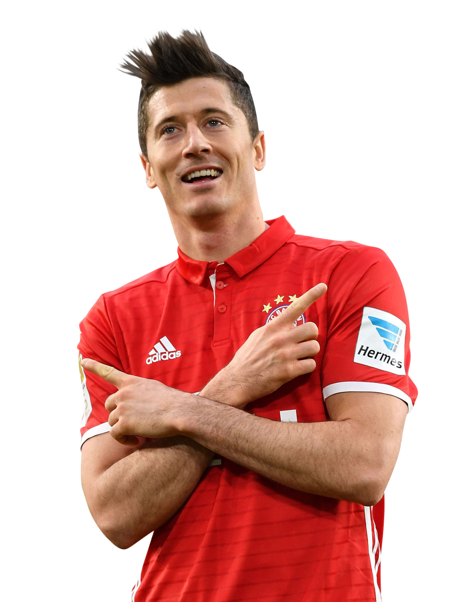

Mo Sala7
WELCOME TO ShAnDo FOOTBALL CLUB
Mohamed Salah Hamed Mahrous Ghali
(born June 15, 1992 in the city of Negrig in Egypt),
is an Egyptian international soccer player,
playing in the right wing position with Liverpool FC in the English Premier League and the Egyptian soccer team.
He is considered one of the most prominent Arab and African players,
as he won many awards, most notably the England Player of the Year award 2018,
chosen by the American magazine Time in 2019 among the 100 most influential personalities in the world.

CR7
WELCOME TO ShAnDo FOOTBALL CLUB
Mohamed Salah Hamed Mahrous Ghali
(born June 15, 1992 in the city of Negrig in Egypt),
is an Egyptian international soccer player,
playing in the right wing position with Liverpool FC in the English Premier League and the Egyptian soccer team.
He is considered one of the most prominent Arab and African players,
as he won many awards, most notably the England Player of the Year award 2018,
chosen by the American magazine Time in 2019 among the 100 most influential personalities in the world.

Lionel Messi
WELCOME TO ShAnDo FOOTBALL CLUB
Lionel Messi, born June 24, 1987,
is an Argentine soccer player who currently plays for Barcelona and the Argentine national team.
He plays as a striker and as a winger.
He is considered one of the best footballers of his generation,
and even ranks him among the best historically as he was nominated several times for
the Golden Ball award and the best soccer player in the world at the age of 20 and 21
and won by the age of 22. He has the most number of goals in one year,
where he scored 91 goals in 2012.

Neymar
WELCOME TO ShAnDo FOOTBALL CLUB
Neymar or Neymar Jr. (born February 5, 1992). He is a Brazilian soccer player,
He plays in the wing and attack position of Paris Saint-Germain and the Brazil national football team.
He is considered one of the best players in the world,
Known as high skill, dribbling, speed,
Innovation, the ability to play with both feet.
He joined Paris Saint-Germain on August 3, 2017, coming from Barcelona, after the Parisian club paid the penalty clause in his contract with Barca.
It amounted to 222 million euros, thus becoming "the most expensive player in football history ever".

Kevin De Bruyne
WELCOME TO ShAnDo FOOTBALL CLUB
Kevin De Bruyne (born June 28, 1991),
He is a Belgian soccer player who plays in the middle
With the English club Manchester City and the Belgium national football team.
A game style made by many media outlets,
The coaches, and his teammates class him as one of the best European players,
He is often described as a "complete soccer player".
In 2017, The Guardian ranked him the fourth best in the world.
De Bruyne was chosen twice as the best player in Manchester City, in 2016 and 2018,
The Guardian magazine ranked him the fourth best in the world.

Zlatan Ibrahimovic
WELCOME TO ShAnDo FOOTBALL CLUB
Zlatan Ibrahimovic (born October 3, 1981)
He is a Swedish soccer player who plays in the offensive position with AC Milan in Serie A.
A high-class striker scoring goals in abundance and famous for his creative style of play, strength, his ability in air balls and accuracy of his powerful shots.
He is now the third most active soccer player with collective titles in the world,
After winning 32 championships in his career.
He scored more than 500 goals in his career with the club and the national team for the club and the country.

Luka Modric
WELCOME TO ShAnDo FOOTBALL CLUB
Luka Modric (born September 9, 1985),
He is a Croatian footballer who plays in the middle with the Spanish club Real Madrid and the Croatian national team.
Modric plays as a central midfielder,
But he can also play as an offensive or defensive midfielder.
Modric is considered one of the best midfielders of his generation,
Among the greatest Croatian footballers of all time,
Having won the 2016 Spanish Premier League Best Player Award for the second time in his career,
Lucca was awarded the Best Player in the World award in September 2018.

Killian Mbappe
WELCOME TO ShAnDo FOOTBALL CLUB
Killian Mbappe, born December 20, 1998
He is a French footballer who plays at the center of the attack with Paris Saint-Germain in the French First Division and France's national football team.
At the age of nineteen he was ranked as the best young player in the world.
Nominated for the Best European Player Award for his great performance in the 2016-17 season in the French League,
He also received the Golden Boy award in the same season.
She also nominated for the Golden Ball Award 2017,
He achieved all these accomplishments when he was only eighteen years old.

Gareth Bale
WELCOME TO ShAnDo FOOTBALL CLUB
Gareth Bale (born July 16, 1989)
He is a football player who plays in the offensive wing position with Real Madrid in the Spanish Football League and the Wales national football team.
The star Bill is considered a distinguished player because of his ability to play as a fullback, winger and striker on both sides
And Portuguese coach Jose Mourinho has said that Bell will be one of the most prominent players in the Premier League in the future.
He knew his speed and skill in shooting from long distances.
In the 2012--13 season he was awarded the Best League Player with Tottenham Hotspur.

Eden Hazard
WELCOME TO ShAnDo FOOTBALL CLUB
Eden Hazard (born January 7, 1991)
He is a Belgian soccer player who plays in the center of the attacking wing and center with Real Madrid in the Spanish Football League
He is the captain of the Belgium national football team.
Hazard is known for its speed, dribbling and distinctive ball control.
He has been described as a "great pass" and has won critical acclaim for his playing style,
As a result, some media, coaches and players compare him to Cristiano Ronaldo and Lionel Messi.
Hazard is often rated by coaches, teammates, and commentators as one of the best players in the world.

Lewandowski
WELCOME TO ShAnDo FOOTBALL CLUB
Lewandowski (born August 21, 1988)
He is a Polish footballer who plays at the center of the attack with Bayern Munich and the Polish national football team.
After being the top-scorer of the Polish third and second division with Zniczsch Broshkov,
He moved to the Polish Premier League team Lakh Poznan,
He was top scorer in the league as they won in the 2009-10 season. In 2010,
He moved to Borussia Dortmund with € 4.5 million,
Where he won the Bundesliga twice in a row,
In 2013 Dortmund qualified for the Champions League final, where he was the second best scorer in that tournament.